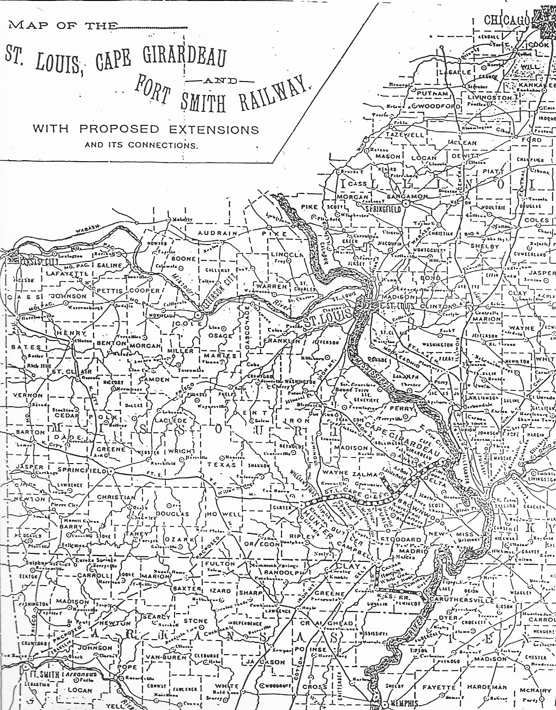

Both of Louis Houck’s railroads increasingly drew Southeast Missouri to the economies of the Midwest and beyond. His railroads utilized other lines to reach markets outside of the Southeast region, which was possible through the intersection of his St. Louis, Kennett & Southern Railroad with his rival Jay Gould’s line the St. Louis and Iron Mountain Railroad at Delta, Missouri. Because these two railroads met, a merchant in Southeast Missouri could carry on commerce, or business, with merchants in St. Louis or Chicago. In addition, through Houck’s St. Louis, Cape Girardeau, Ft. Smith Railroad, merchants also had access to Kansas City in Western Missouri, as well as South to Memphis, Tennessee. Trade was also promoted with Southeast Arkansas through these railroads.
Due to the changing face of the economy in Southeast Missouri due to Houck’s railroads, investors from the East coast of the United States were drawn to the area, buying stock in Houck’s companies. Investors from all over the country were attracted to the Southeast Missouri region—this in itself reveals the important and valuable role that Houck’s railroad played in Southeast Missouri’s growth during the 1890s.
Though Houck’s railroads were very successful, they did not come about without competition. One of his major competitors was a man by the name of Jay Gould. Gould owned and controlled the St. Louis and Iron Mountain Railroad, which ran through Southeast Missouri and was a direct competitor with Houck’s St. Louis, Cape Girardeau, Ft. Smith Railroad. Not to mention, Gould was interested in gaining control of Houck’s other rail road (the St. Louis, Kennett & Southern Railroad). This competition proved that there was potential growth for Southeast Missouri.
When it came to which line Southeast Missourians trusted more, the decision laid in who controlled the railroad from where. Local merchants liked it better when the railroad was locally owned instead of by outside parties. When the railroad was owned locally, profits made from it could be returned to the community. But if the railroad was owned from out of the region, profit would benefit the outside community and not the community in which the railroad operates.
If the economy in Southeast Missouri took a turn for the worst, Houck would be affected more so than Gould, proving that he has more to lose. Since Houck had more to lose, he put more time and effort into operating his railroad, which is something local merchants liked. Gould on the other hand would not suffer as much, leaving local merchants to believe he would not care for them as much as Houck did. This proved that Southeast Missouri could be successful through Houck’s railroads if they were willing to withstand outside competition.
The Houck-Gould conflict turned Houck’s railroad into a symbol for the people in Southeast Missouri. This symbol came to be after Houck won a Supreme Court case over Gould, which revolved around who would control the St. Louis, Cape Girardeau, Ft. Smith Railroad. Houck’s victory was not only a personal one, but a victory for Southeast Missouri.
{kind=link}